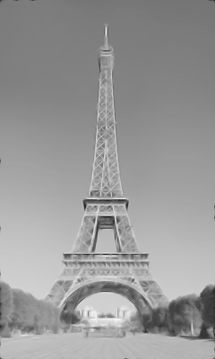
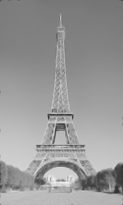

Art 321 Evan Argenal - Assignment 2 Solution
Question 1


To remove the yellow and replace it with white, I used Photoshop to achieve this.
Under "Adjustments", there is a "Replace Color" feature in which I selected the yellow
with the eye dropper tool and hit replace with a pure white color.
Question 2

I used a threshold value of 175 in Photoshop.
This value seemed to give a good balance between readable font and a clear divide
between the black text and the white background.
Question 3

I used a threshold value of 55 in Photoshop.
This image was a lot tougher than the previous image, but this value was the only value I could find
that would give a somewhat readable text with no black in the background. It was either hard to read (like this image)
or the background would turn black.
Question 4


I used a threshold value of 114 in Photoshop.
This was a similar situation to the previous image where it was hard to balance between a white background and text that
was black and readable. I don't believe there is single best value, but there is a small range where you can get good results.
Question 5

The edge detection algorithm that I used was the Roberts cross algorithm.
At the black rectangle boundary, only the right and bottom edges are showing, while the top and left edges turned white.
At the grey rectangle boundary, the opposite edges of the black rectangle boundary are showing (top and left), while the right and bottom edges are white now.
The lines forming the "X" no longer intersect. It appears almost that the "X" is 3D now (The same could be said about the rectangle).
Question 6

 

I used the "despeckle" noise reduction method for the image on the left in GIMP.
It did a good job removing the noise, but the image definitely lost a lot of quality from this method.
I used the "noise reduction" option for the image on the right in GIMP.
It did a similar job to the despeckle, but I would argue it made the quality worse by "smoothing" out the image.
The detail in the image has been reduced significantly as a result.
I believe these methods reduce noise by smoothing out the pixels in the image so they appear more blended in and "smoother",
but this is an issue as it leads to the appearance of quality loss (such as the images above). This is where noise reduction
methods fail. They simply can't remove the noise and maintain the original quality of the image.